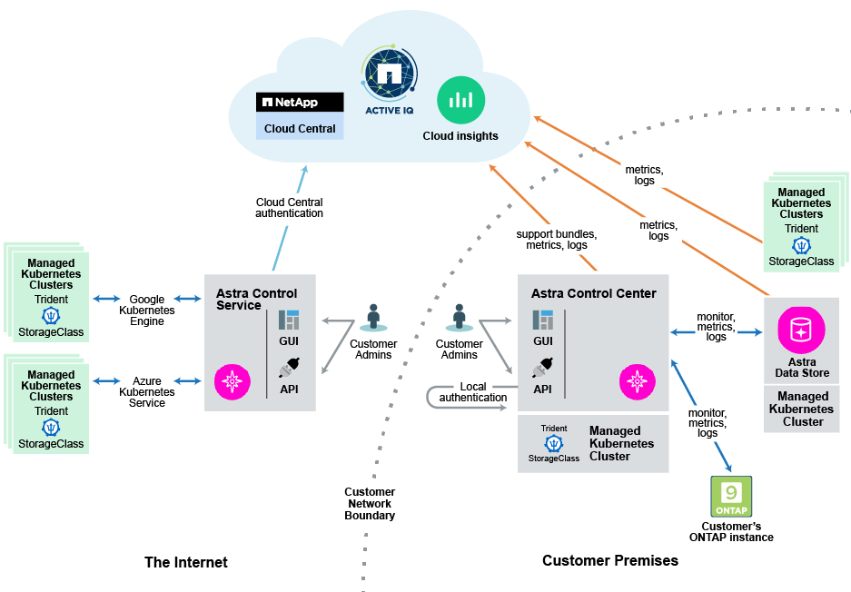

Astra 系列简介
NetApp Astra 产品系列可为 Cloud 原生 应用程序提供应用程序数据管理和存储。
Astra 产品包括：
-
* Astra Control* ：使用应用程序感知型数据管理工具来管理，保护和移动公有云和内部环境中的 Kubernetes 工作负载。
-
* Astra 控制服务 * ：使用 NetApp 管理的服务对公有云中的 Kubernetes 工作负载进行数据管理。
-
* Astra 控制中心 * ：使用自管理软件对内部 Kubernetes 工作负载进行数据管理。
-
-
* Astra Data Store* ：对容器和 VM 工作负载使用 Kubernetes 本机共享文件服务进行企业数据管理。
-
* Astra Trident * ：与 NetApp 存储提供商合作，为 Kubernetes 工作负载配置和管理符合容器存储接口（ CSI ）要求的存储。
| 功能 | 产品 |
|---|---|
管理 |
Astra 控制服务 Astra 控制中心 Astra Trident |
存储 |
Astra 数据存储 |
下图显示了 Astra 系列生态系统。 
Astra Control
Astra Control 是 Kubernetes 应用程序数据生命周期管理解决方案，可简化有状态应用程序的操作。轻松保护，备份和迁移 Kubernetes 工作负载，并即时创建有效的应用程序克隆。
功能
Astra Control 为 Kubernetes 应用程序数据生命周期管理提供了关键功能：
-
自动管理永久性存储
-
创建应用程序感知型按需快照和备份
-
自动执行策略驱动的快照和备份操作
-
将应用程序和数据从一个 Kubernetes 集群迁移到另一个集群
-
将应用程序从暂存克隆到生产环境
-
直观显示应用程序运行状况和保护状态
-
使用用户界面或 API 实施备份和迁移工作流
Astra Control 会持续监控您的计算状态变化，因此它可以识别您在此过程中添加的任何新应用程序。
部署模式
Astra Control 有两种部署模式：
-
* Astra Control Service* ： NetApp 管理的一项服务，可在 Google Kubernetes Engine （ GKEE ）和 Azure Kubernetes Service （ AKS ）中为 Kubernetes 集群提供应用程序感知型数据管理。
-
* Astra Control Center* ：自管理软件，可为内部环境中运行的 Kubernetes 集群提供应用程序感知型数据管理。
| Astra 控制服务 | Astra 控制中心 | |
|---|---|---|
如何提供？ |
作为 NetApp 提供的一项完全托管的云服务 |
作为您下载，安装和管理的软件 |
它托管在何处？ |
基于 NetApp 选择的公有云 |
在您提供的 Kubernetes 集群上 |
如何更新？ |
由 NetApp 管理 |
您可以管理任何更新 |
应用程序数据管理功能是什么？ |
两个平台上的功能相同，但后端存储或外部服务除外 |
两个平台上的功能相同，但后端存储或外部服务除外 |
什么是存储后端支持？ |
NetApp 云服务产品 |
|
Astra 数据存储
Astra 数据存储是一个分布式并行文件系统，可为具有企业数据管理功能的 Kubernetes 集群提供可扩展的共享文件和块数据服务原生 。
Astra 数据存储库包括以下主要功能：
-
以软件形式打包和交付
-
在第三方商用硬件上运行
-
为传统应用程序和云原生应用程序提供一个通用数据平台
Astra Trident
Astra Trident 是 NetApp 对 Kubernetes 容器存储接口（ CSI ） driver 的开源实施。Astra Trident 为 Kubernetes applications 提供业务流程和数据连接。